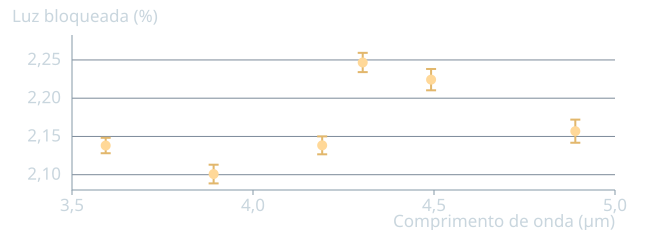

Qual ciência consegue
chegar à Terra?
Um jogo de engenharia espacial em que a evidência depende das suas escolhas.


Apresentado por Alexandre Belo
alexandrebelo.com.br
Cerrado · Terra/MODIS
O que mudou na vegetação?
Compare dois períodos usando observações históricas. Para calcular o índice a bordo, a nave precisa sustentar um pico de potência.
- Enviar bandas
- 2 registros válidos
- Calcular o índice
- 0 registros válidos
O índice usa menos dados. Neste ensaio, o processamento excede a potência disponível.
Brasil central · imagem de contexto Terra/MODIS, 2000

Bennu · OSIRIS-REx
Seis rochas medidas.
Quantas chegam?
O estudo publicou as dimensões das rochas e dos clastos. No jogo, o que chega ao solo depende do tempo de contato para transmitir os dados.
O exercício compara tamanhos. A composição e a origem exigem outras medidas.
Bennu · mosaico PolyCam, 2018 · NASA/Goddard/University of Arizona
WASP-39 b · Webb/NIRSpec
A atmosfera muda a luz.
Quando o planeta passa diante da estrela, quanto da luz é bloqueado em cada faixa?

No ensaio, câmera e espectrômetro recebem seis pacotes. Só o espectrômetro do jogo atende ao requisito científico. As seis faixas não reconstituem a análise molecular.
Representação do Webb · modelo NASA/Goddard
Mude o contato. Veja o que chega.
Ensaio de Bennu, com a mesma taxa de rádio nas duas tentativas.
válidos no solo
Eixo maior publicado · seis registros
- Sítio 11,53 m
- Sítio 23,93 m
- Sítio 32,62 mSem entrega
- Clasto 4a1,6 mSem entrega
- Sítio 53,221 mSem entrega
- Sítio 61,453 mSem entrega
O serviço ampliado começa mais cedo, dura mais e custa mais. O ensaio compara o pacote completo. Esquema do enlace · resultado final do jogo
Quem defende o resultado?
Na cena 3D do jogo, a trilha leva do dado recebido ao evento que fez a diferença.
- Pergunta
- Requisito
- Registro
- Entrega
- Interpretação
Lançamento A massa da configuração cabe no limite do lançador?
Espaço Qual evento a bordo explica o resultado?
Solo Quais registros chegaram durante as janelas de contato?
Usuários O que as medidas recebidas permitem concluir?
Cada papel registra uma conclusão e a evidência que a sustenta. Jogue sozinho ou em até quatro pessoas no mesmo dispositivo.
Qual evidência sustenta
a sua decisão?
Escolha um destino, faça uma previsão e confira o resultado.
Dados científicos históricos. Nave configurável, tempo e recursos didáticos. IPÊ é a equipe.
Apresentado por Alexandre Belo
alexandrebelo.com.br